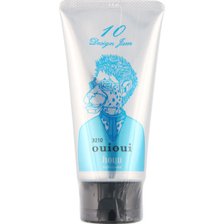

返回列表
产品名称：ミニーレウイウイデザインジャム10

ホーユー ミニーレウイウイデザインジャム10 ８０ｇ
メーカー ホーユー
JANコード 4987205527807
商品の特徴
スタイリングの価値を高めるハイブリッド処方・ツンツンシャープな束感をしっかりホールド・ウォータリーな質感とグロスの輝きを表現します。
成分・分量
ジェル (アクリル酸アルキル／ジアセトンアクリルアミド)コポリマーAMP、カルボマーグロス PEG-11メチルエーテルジメチコン
用法及び用量
多彩なデザイン、確かなスタイリング力と持続性で理想の髪型をつくります。見て、触れて、楽しく、ヘアデザインをゆたかにするスタイリング剤です。